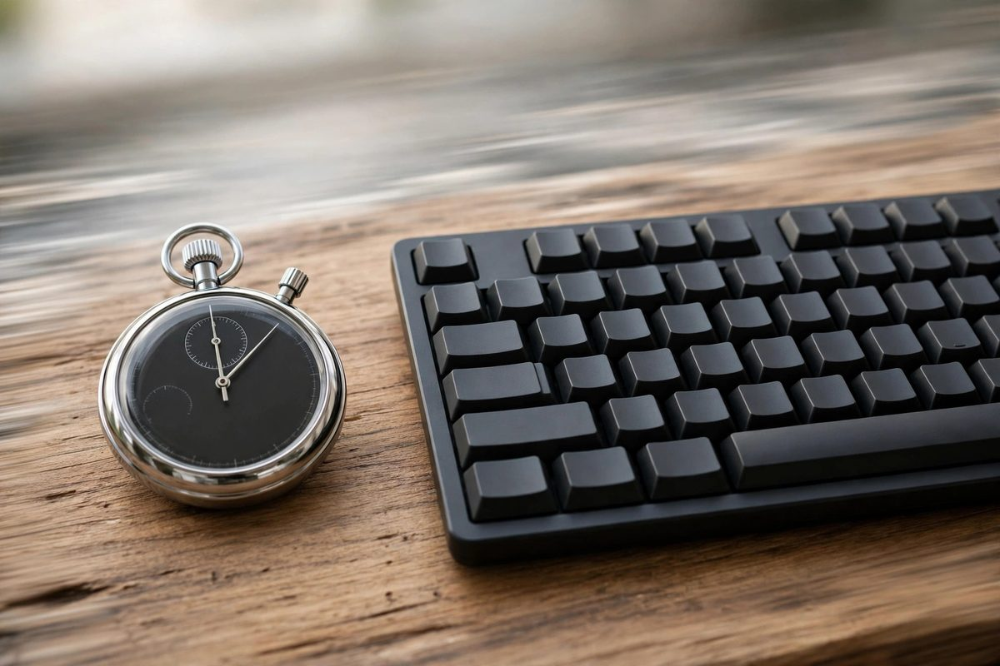
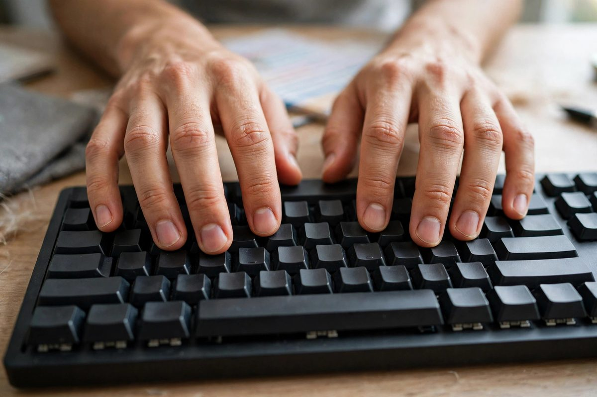
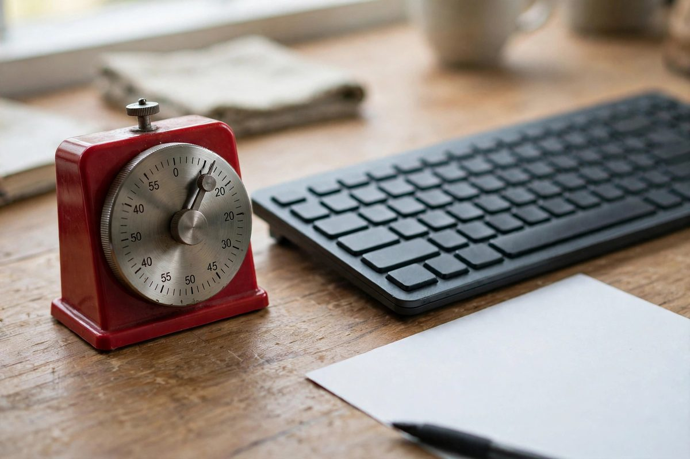
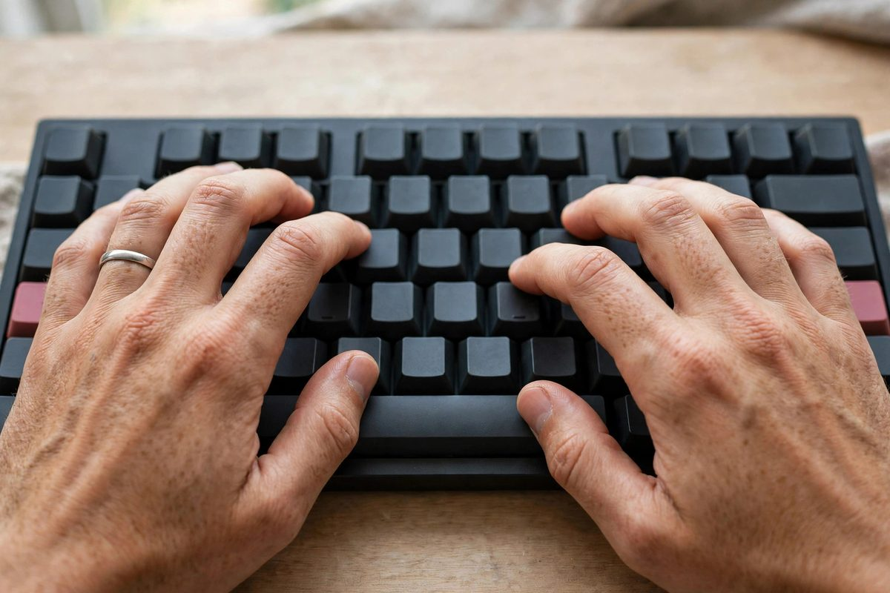
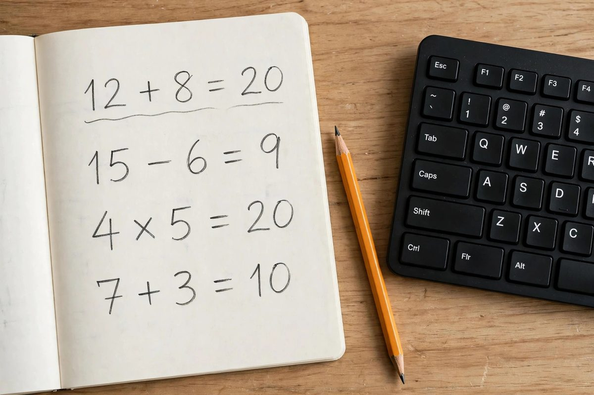
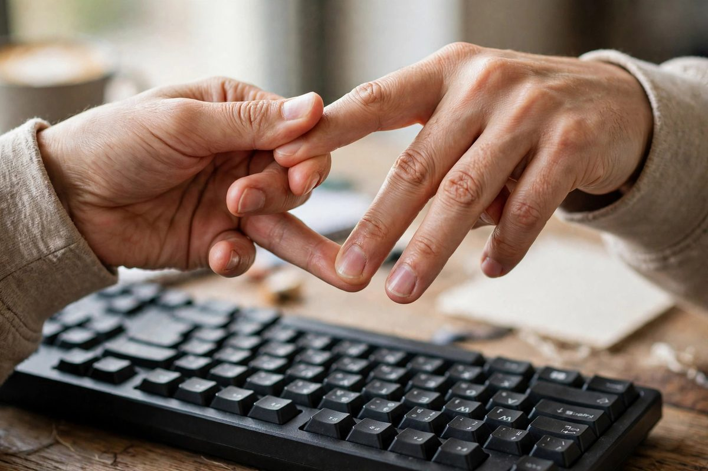
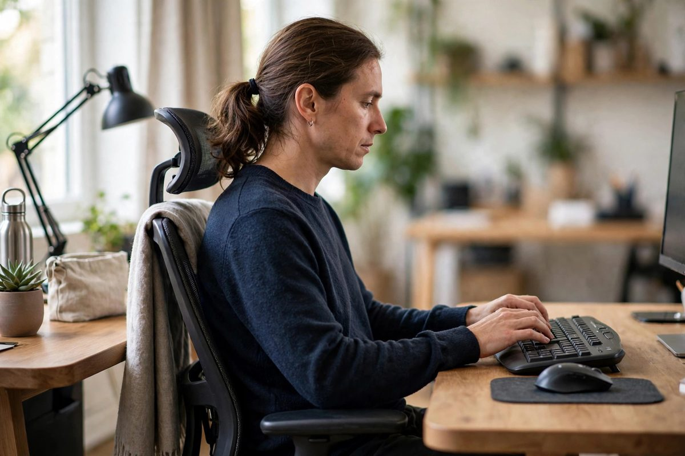
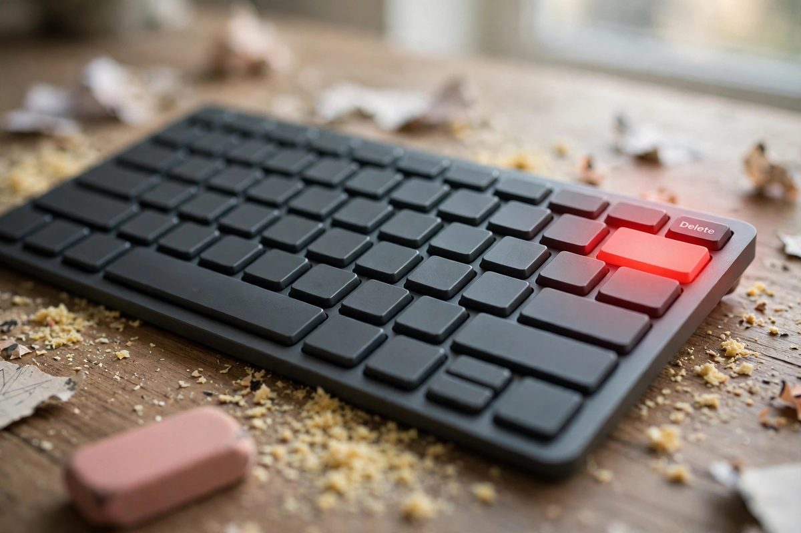
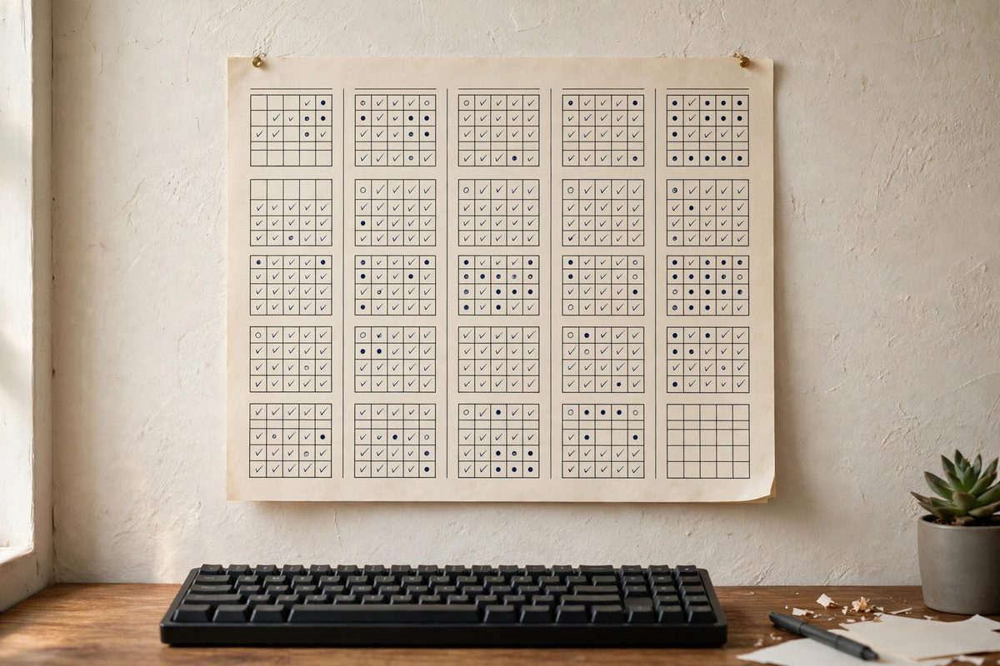
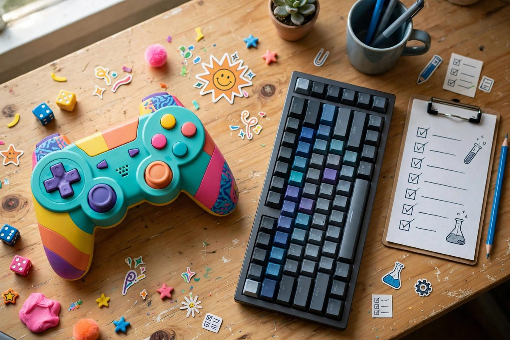

Typing Speed Test
Test your real typing speed and accuracy. Type the passage, get your true WPM and see your history.
How it works
Typing Speed Test is a free, simple tool that works entirely in your browser. Start with our guide on how to take a typing test what is wpm? explained how to improve typing speed typing accuracy explained one-minute typing test explained how to improve typing accuracy, then open the main tool and try it yourself. Everything is explained in plain language, with worked examples and practical steps you can follow today.
Each tool on this site is free and needs no account. Your data, where a tool stores any, stays on your own device. Read the guides below to learn how to get the most from each tool, avoid common mistakes, and build a routine that lasts.
Our tools
Typing Test
Type the passage shown and get your real words per minute and accuracy, measured from your actual typing.
1-Minute Typing Test
A timed sixty-second test that measures your speed under time pressure.
Guides
How to Take a Typing Test
Taking a typing test is simple: read the passage, type it as accurately as you can, and read your real result.

What Is WPM? Explained
WPM means words per minute, and it is the standard way to measure how fast someone types.

How to Improve Typing Speed
Typing faster comes from regular, short practice with correct finger placement, not from typing harder.
Typing Accuracy Explained
Accuracy is the share of characters you typed correctly, and it matters at least as much as speed.

One-Minute Typing Test Explained
A one-minute test is the most common typing test: sixty seconds, one passage, and a score at the end.
How to Improve Typing Accuracy
Accuracy improves when you slow down slightly, look at the screen, and correct mistakes as they happen.
Typing Test for Beginners
If you are new to typing tests, the first result is a starting point, not a judgement, so treat it that way.
Common Typing Mistakes
Most typing mistakes come from the same few habits, and each one has a simple fix you can practise.

How to Practice Touch Typing
Touch typing means typing without looking at the keys, using the home row as the base for every finger.
Typing Speed for Students
Students type every day for notes, essays and exams, so a faster, more accurate speed saves real time.
Typing Speed for Work
In office work, typing speed affects how fast you answer emails, write reports and enter data.

How WPM Is Calculated
WPM is not a guess. It comes from a simple formula using the characters you typed correctly and the time taken.
Typing Test History Explained
A history of your test results shows whether you are improving, and by how much, over weeks of practice.

How to Warm Up Before a Typing Test
A short warm-up loosens your fingers and steadies your rhythm before a test that counts.

Keyboard Posture for Typing
Good posture protects your wrists and hands, and it also helps you type faster for longer without tiring.

Typing Test Mistakes to Avoid
Typing tests give a misleading score when a few simple mistakes creep in, so it helps to know them first.

How Often Should You Practice Typing?
Short daily practice beats long practice once a week, for typing just as for any other skill.
Typing Test for Job Applications
Some jobs ask for a typing test, and knowing your real speed before you apply removes the guesswork.
The Best Way to Track Typing Progress
Progress is easier to see when you record every test result and compare averages, not single best scores.

Typing Games vs Typing Tests
Typing games make practice fun, but a proper test is the only way to get a reliable speed and accuracy score.
Frequently asked questions
How is WPM calculated?
WPM is calculated from your actual typing: the number of correct characters divided by five, divided by the minutes you spent typing. No score is invented.
Is the test really timed from my typing?
Yes. The clock starts on your first keystroke and stops when you finish or the time runs out. Your score comes only from what you typed.
Do I need an account?
No. The test works without an account, and your history is stored only in your own browser using localStorage.
What is a good WPM?
Around 40 WPM is average for most adults. Above 60 is good, and above 80 is fast. Accuracy matters as much as speed.
Can I retake the test?
Yes, as many times as you like. Each result is saved to your history so you can track improvement.
Does it work on a phone?
Yes, the test works on phones, but a physical keyboard gives the most accurate speed result.